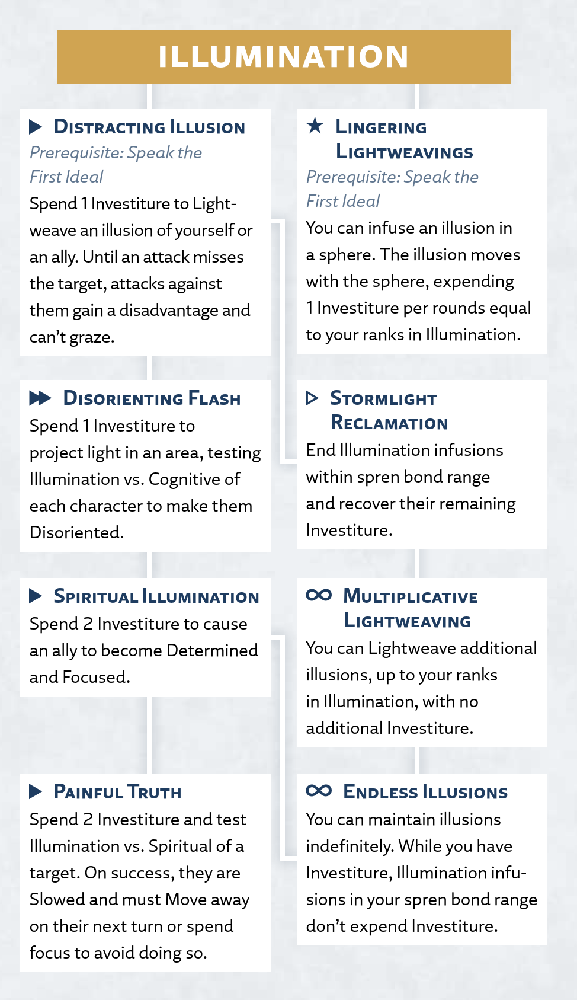

Illumination
Presence
The surge of Illumination can create convincing illusions, both visual and auditory. This ability is commonly known as Lightweaving, though Lightweavers and Truthwatchers can both use this surge.
Illumination Surge
Radiant Orders: Lightweaver, Truthwatcher
Activation: ▶
To Lightweave an illusion, spend 1 Investiture or more to infuse it into thin air in a space within your spren bond range. This illusion can't exceed the surge size for your ranks in Illumination (see the Surge Scaling table at the beginning of this chapter).
Lightweavings typically take the form of a three-dimensional hologram representing a character, object, or phenomenon you're familiar with. This illusion is composed of light, complete with animation and accompanying sounds produced by the vibrations of your bonded spren.
Simple and Complex Illusions. If the illusion depicts a simple object with no sound or animations, the infusion uses 1 Investiture every 10 minutes. If the illusion depicts a character or more complex object, it instead uses 1 Investiture each round. For the duration, the illusion remains active even if you move out of range. You can move and control a complex illusion, as detailed in "Controlling Illusions."
Disguising Yourself. Alternatively, if you have 1 Investiture or more, you can use Illumination to create an illusory disguise on yourself without spending Investiture. This disguise lasts until you end it as ▷ or run out of Investiture.
Deceiving Characters. If your illusion is a simple object or a disguise on yourself, it automatically convinces characters unless they have a reason to be suspicious. If you create a more complex illusion (such as disguising another character), the GM might require you to make an Illumination test against the Cognitive defense of any character who passively observes the illusion; on a success, your illusion is convincing to them.
A character might decide to Use a Skill to scrutinize your illusion, especially if you fail the above Illumination test or if you or your allies roll a Complication on a related test. In this case, make an Illumination test opposed by the character's Perception test. If their test result exceeds your own, they notice the illusion (see "Detecting Illusions" for the effects).
You can make these tests to deceive characters even if that illusion is currently out of your spren bond range.
Using Illumination
In addition to the basic surge rules above, this section provides more guidance on using or interacting with this surge in your game.
Imagining Illusions
Lightweaving is easiest when replicating something you're familiar with. If you have a great memory or if you reference material you created (such as a sketch, a painting, or a written passage) you might be able to Lightweave something you've only encountered a few times—but your Illumination tests to deceive onlookers will probably gain a disadvantage.
It's very challenging to Lightweave something you've only seen in drawings or imagined yourself. It's up to your GM how difficult this is, but you might face challenges such as a reduced surge size, an additional Investiture cost, a focus cost, an increased DC, or a disadvantage on your d20 roll.
Controlling Illusions
You can control all of your complex illusions that are within your spren bond range. Each illusion can pretend to interact with its environment; for example, you might make an illusionary tree bend with the wind, or make an illusionary child try to catch a ball (but intentionally miss it). However, your illusion has no senses of its own, so you can't give it tasks that require senses or knowledge you don't have.
An illusion can move up to your movement rate on your turn in a manner reasonable for that illusion. You can use ▷ to have one or more of your illusions perform simple, mindless tasks like walking across the street or shouting a phrase. You can use ▶ to task one of your illusions with something that requires your careful attention, such as convincingly conversing with someone.
If you move out of range, your illusions can only perform whatever simple, mindless tasks you last gave them, such as gazing thoughtfully at a bookshelf.
Maintaining Illusions
When your illusions begin running out of Stormlight, you can seamlessly maintain them by feeding Investiture from your own supply. You can use ▷ to infuse 1 Investiture or more into any illusions of your choice within your spren bond range (spending separate Investiture for each illusion).
Detecting Illusions
A failed Illumination test or an unfortunate Complication can cause a target to recognize that an illusion is artificial. However, when this happens, the illusion itself persists, and it might even continue to conceal something else in the right circumstances. For example, if you Lightweave a boulder around yourself, a successful Perception test may alert an enemy that something is amiss, but they still won't be able to see inside the boulder. (However, you can't see through your illusionary boulder either!)
Tests aren't the only way to detect an illusion (or to become suspicious of one). If one character detects an illusion, they might alert their allies that it isn't real. And if a physical object passes through an illusion, a white blur appears at the intersection, and a character familiar with Lightweaving might recognize these telltale signs. Such events can betray the presence of Lightweaving, and any character wishing to determine the boundaries or source of an illusion can make a Deduction or Perception test opposed by your Illumination.
Illumination Talent Tree
Illumination Talents
The following talents, presented here in alphabetical order, appear in the Illumination talent tree for the Lightweaver and Truthwatcher paths.
Disorienting Flash
Prerequisite: Distracting Illusion talent
Activation: ▶▶
You create a brief burst of light and sound that attacks the senses of targets near you.
Spend 1 Investiture to project a burst of light in an area within your reach, up to the size you can create with your ranks in Illumination. Make one Illumination test and compare the result against the Cognitive defense of each character in that area. If you succeed against a target, they become Disoriented until the end of their next turn.
Distracting Illusion
Prerequisite: Speak the First Ideal
Activation: ▶
You create a moving, illusory copy of someone to distract your enemies.
Spend 1 Investiture to Lightweave an illusory duplicate, either of yourself or an ally you can sense within your spren bond range. The illusion appears in that character's space and moves with them. Attacks against that character gain a disadvantage and can't graze. The illusion ends after an attack misses that character or at the end of the scene.
Endless Illusions
Prerequisite: Multiplicative Lightweaving talent or Spiritual Illumination talent
Activation: ∞
You've become so efficient at powering your illusions that you can maintain them indefinitely.
While you have 1 Investiture or more, each of your Illumination infusions within your spren bond range expends no infused Investiture at the start of your turn.
Lingering Lightweaving
Prerequisite: Speak the First Ideal
Activation: ★
You infuse spheres with your Illumination, creating illusions that linger long after you've moved away.
When you Lightweave an illusion, instead of creating it in thin air, you can instead infuse its Investiture in a sphere or unencased gem within 5 feet of that illusion. For the duration, the illusion moves with the gem; for example, an ally could carry this gem to extend the duration of an illusory disguise you created for them. Instead of the infusion expending 1 Investiture per round, it expends 1 Investiture per number of rounds equal to your ranks in Illumination; for example, if you have 3 ranks in Illumination, your infusions in spheres expend Investiture once every 3 rounds.
Multiplicative Lightweaving
Prerequisite: Stormlight Reclamation talent
Activation: ∞
You effortlessly Lightweave multiple illusions at once.
When you Lightweave an illusion, you can create a number of additional illusions up to your ranks in Illumination. These infusions last for the duration of the original infusion and require no additional Investiture to create or maintain.
Painful Truth
Prerequisite: Spiritual Illumination talent
Activation: ▶
You create a haunting image of who an enemy could have been if they'd taken a better path.
Spend 2 Investiture and make an Illumination test against the Spiritual defense of a target you can sense within your spren bond range. On a success, they stumble in shock, becoming Slowed until the end of their next turn.
At the start of the target's next turn, they must either spend focus equal to your ranks in Illumination to end this effect as ▷, or immediately use the Move action to move as far as possible away from you.
Spiritual Illumination
Prerequisite: Disorienting Flash talent
Activation: ▶
You use Lightweaving to show your allies inspiring possibilities of who they could become.
Spend 2 Investiture to create a momentary Lightweaving near an ally you can sense within your spren bond range. That ally becomes Determined and Focused until the end of their next turn.
Stormlight Reclamation
Prerequisite: Distracting Illusion talent
Activation: ▷
You can reclaim Stormlight from active illusions.
After your infusions expend their infused Investiture at the start of your turn, you can end any number of those infusions within your reach, recovering all remaining Investiture they were infused with.